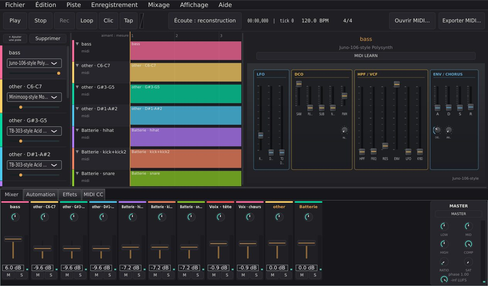

VSM Studio
A desktop studio for making music with modelled machines: a MIDI sequencer, audio tracks and a mixing console around a rack of 64 instruments — from a Minimoog, a TB-303 and a TR-808 to a bowed string, a sitar and a theremin. And a way back: give it a recorded song, and it tries to rebuild it as a project you can edit.
Un studio de bureau pour faire de la musique avec des machines modélisées : séquenceur MIDI, pistes audio et console de mixage autour d’un rack de 64 instruments — du Minimoog, de la TB-303 et de la TR-808 à la corde frottée, au sitar et au thérémine. Et le chemin inverse : donnez-lui un morceau enregistré, il tente de le reconstruire en projet modifiable.
ស្ទូឌីយោតន្ត្រីលើកុំព្យូទ័រ សម្រាប់បង្កើតតន្ត្រីជាមួយម៉ាស៊ីនសំឡេងដែលធ្វើគំរូតាមឧបករណ៍ពិត៖ MIDI sequencer, track អូឌីយ៉ូ និងតុលាយសំឡេង នៅជុំវិញរ៉ាក់ឧបករណ៍តន្ត្រីចំនួន 64 — ចាប់ពី Minimoog, TB-303 និង TR-808 រហូតដល់ខ្សែដែលអូសដោយធ្នូ sitar និង theremin។ ហើយក៏មានផ្លូវត្រឡប់វិញដែរ៖ ផ្តល់បទភ្លេងដែលបានថតរួចឱ្យវា វានឹងព្យាយាមបង្កើតវាឡើងវិញជាគម្រោងដែលអ្នកអាចកែសម្រួលបាន។

A rack of machines, and a studio around it.
For a long time the application around the sound engine was only a demonstrator: no audio track, no recording, no clips, no way to save a project. That is no longer true. VSM Studio is now a complete desktop workstation in one window — the transport at the top, the tracks on the left, the arrangement or the piano roll in the centre, the panel of the selected instrument on the right, the mixing console at the bottom. Every border can be dragged, and any panel can float in its own window.
The instruments are called machines, and each one is written from scratch in C++. Some follow famous synthesizers — the Minimoog, TB-303, Juno-106, Jupiter-8, Prophet, MS-20 and DX7, and the TR-808 and TR-909 drum machines. Others are synthesis methods: FM, wavetable, additive, granular, phase distortion, West Coast. The largest family is physical models: plucked and bowed strings, a hammered piano, winds and reeds, bells, a sitar with its buzzing bridge, a theremin, a voice.
The other half of the project goes the other way. A Python chain takes a recorded song, separates it, transcribes it and searches the rack for the machines and settings that come closest — then opens the result as a project you can play, edit and mix.
From the first note to the export.
| Area | What you get |
|---|---|
| Instruments | 64 machines, each with its own hardware-style panel, played from a MIDI keyboard or the computer keyboard. They answer pitch bend, modulation and aftertouch according to their nature: a piano or a drum machine refuses to bend a note, as the real one would. |
| Editing | A piano roll with drawing tools, quantise and swing, scales, chords and arpeggios, a velocity lane and a logical editor (velocity < 30 and length < 1/32). Undo covers the whole project. |
| Arranging | Clips you move, cut and duplicate, linked copies, markers, automation curves and track versions. |
| Recording | MIDI and audio, with count-in and stacked takes. An audio clip can be quantised, follow the tempo or be turned into notes. |
| Mixing | A console with faders in dB, RMS and peak meters, sends, group buses, sidechain, 19 insert effects, mix snapshots and a master bus with EQ, compressor and limiter. |
| Plugins | Hosts CLAP and VST3 instruments and effects; the VSM machines can themselves be built as a CLAP plugin. |
| Files | MIDI files in and out; projects from Ableton Live (.als), FL Studio (.flp) and Cubase track archives (.xml); audio export to WAV, FLAC or Ogg, optionally normalised to −14 or −23 LUFS. |
| Saving | Autosave every thirty seconds when the project has changed, crash recovery at the next start, and a self-contained project mode that carries its media along. |
From a recording to a project.
Separate
Demucs splits the song into up to six stems: drums, bass, vocals, guitar, piano and the rest. A stem that carries almost nothing is not rebuilt, and the report gives the figure. On an Intel Arc integrated GPU this step runs 2.8× faster than on the CPU, with the same stems.
Transcribe
Each stem becomes notes (basic-pitch), and the tempo of the song is estimated and written into the project. Parts can be split further: a stem by register, the drums piece by piece, lead and backing vocals. Notes the transcription is unsure of are outlined in amber in the piano roll.
Choose the sound
Candidates are rendered by the real engine, so the patch that is found sounds the same in the studio. One note chooses the patch, the whole track chooses the machine, and the mix has the last word: a better track is kept only if it brings the whole song closer. For drums, the modelled kit competes with the TR-808 and TR-909.
Compare
The project comes with its report: an overall distance to the original, and one per track, the farthest one marked. Load the original as an A/B reference and switch with R; it never goes into the export. Vocals are not resynthesised: the vocal stem is carried over as audio.
It is a research tool, and the repository treats it as one: results are published with their figures, and the ideas that failed are written down too — a model trained end to end from audio to settings, a modelled electric guitar. Cutting a track stays a human decision. The chain needs its own Python environment; without it, the command is greyed out and says why.
Built to be measured.
Panels like the hardware
Each of the 64 machines has its own panel, laid out like the original: the Minimoog’s signal path, the TB-303’s single row, the six DX7 operators, the organ’s drawbars. On the TR-808 and TB-303 the step sequencer is part of the panel and edits the same notes as the piano roll. Physical models, which never had a panel, show their signal path.
A sound that cannot drift
Every machine has an audio fingerprint that freezes its render: if a change to shared DSP code alters the sound of any machine, a test fails. Rendering is deterministic — the same project gives the same WAV file, byte for byte.
Real-time rules, tested
Tests check that the audio thread does not allocate memory, and a concurrency test runs under ThreadSanitizer. Vectorising across voices made a 16-track graph 1.40× faster, with every fingerprint unchanged.
Works with other software
The machines build as a CLAP plugin, and a patch gives the same samples in a CLAP host as in the studio — a test checks it. The studio hosts CLAP and VST3 instruments and effects. vsm-render renders a project to WAV without a window, and Python can drive the engine.
Imports that say what they lost
Projects from Ableton Live, FL Studio and Cubase arrive with their tempo, tracks, notes, names and colours, plus a report of what was kept, approximated or lost. Instruments do not travel: an Operator or Sytrus patch has no equivalent here, so none is invented. Cubase’s closed .cpr format is refused rather than guessed.
Nothing lost
The project is saved every thirty seconds when it has changed, written next to the file before switching over. After a crash, the next start offers the session back, with its name, its date and what it contains.
It is built from source: the engine needs only CMake and a C++20 compiler, the desktop application downloads JUCE when it is configured, and the reconstruction needs its own Python environment. The interface is in French or English; the manual is in French.
Un rack de machines, et un studio autour.
Longtemps, l’application autour du moteur sonore n’a été qu’un démonstrateur : pas de piste audio, pas d’enregistrement, pas de clip, aucune sauvegarde de projet. Ce n’est plus vrai. VSM Studio est désormais un studio complet, dans une seule fenêtre — le transport en haut, les pistes à gauche, l’arrangement ou le piano roll au centre, la façade de l’instrument choisi à droite, la console en bas. Chaque frontière se tire à la souris, et chaque panneau peut devenir une fenêtre flottante.
Les instruments s’appellent des machines, et chacune est écrite de zéro en C++. Certaines suivent des synthétiseurs célèbres — Minimoog, TB-303, Juno-106, Jupiter-8, Prophet, MS-20 et DX7, et les boîtes à rythmes TR-808 et TR-909. D’autres sont des méthodes de synthèse : FM, table d’ondes, additive, granulaire, distorsion de phase, West Coast. La famille la plus nombreuse est celle des modèles physiques : cordes pincées et frottées, piano à cordes frappées, vents et anches, cloches, un sitar et son chevalet qui grésille, un thérémine, une voix.
L’autre moitié du projet va dans l’autre sens. Une chaîne en Python prend un morceau enregistré, le sépare, le transcrit et cherche dans le rack les machines et les réglages qui s’en approchent le plus — puis ouvre le résultat comme un projet qu’on peut jouer, modifier et mixer.
De la première note à l’export.
| Domaine | Ce qu’on y trouve |
|---|---|
| Instruments | 64 machines, chacune avec sa façade façon matériel, jouées au clavier MIDI ou au clavier de l’ordinateur. Elles répondent à la molette de hauteur, à la modulation et à l’aftertouch selon leur nature : un piano ou une boîte à rythmes refuse de plier la note, comme l’original. |
| Édition | Un piano roll avec outils de dessin, quantification et swing, gammes, accords et arpèges, une lane de vélocité et un éditeur logique (vélocité < 30 et durée < 1/32). L’annulation couvre le projet entier. |
| Arrangement | Des clips qu’on déplace, coupe et duplique, des copies liées, des repères, des courbes d’automation et des versions de piste. |
| Enregistrement | MIDI et audio, avec décompte et prises empilées. Un clip audio peut être quantifié, suivre le tempo ou devenir des notes. |
| Mixage | Une console aux faders gradués en dB, des vumètres RMS et crête, des départs, des bus de groupe, une chaîne latérale, 19 effets d’insert, des instantanés de mixage et un bus master avec égaliseur, compresseur et limiteur. |
| Plugins | Hôte d’instruments et d’effets CLAP et VST3 ; les machines VSM peuvent elles-mêmes être compilées en plugin CLAP. |
| Fichiers | Fichiers MIDI en entrée et en sortie ; projets Ableton Live (.als), FL Studio (.flp) et archives de pistes Cubase (.xml) ; export audio en WAV, FLAC ou Ogg, au besoin normalisé à −14 ou −23 LUFS. |
| Sauvegarde | Sauvegarde automatique toutes les trente secondes quand le projet a changé, récupération après plantage au démarrage suivant, et un mode « projet autonome » qui emporte ses médias. |
D’un enregistrement à un projet.
Séparer
Demucs découpe le morceau en six stems au plus : batterie, basse, voix, guitare, piano et le reste. Un stem qui ne porte presque rien n’est pas reconstruit, et le rapport donne le chiffre. Sur le GPU intégré Intel Arc, cette étape est 2,8 fois plus rapide que sur le processeur, pour les mêmes stems.
Transcrire
Chaque stem devient des notes (basic-pitch), et le tempo du morceau est estimé puis écrit dans le projet. Les parties peuvent se découper davantage : un stem par registres, la batterie pièce par pièce, la voix principale et les chœurs. Les notes dont la transcription doute sont cerclées d’ambre dans le piano roll.
Choisir le son
Les candidats sont rendus par le vrai moteur : le patch trouvé sonne de la même façon dans le studio. Une note choisit le patch, la piste entière choisit la machine, et le mélange a le dernier mot : une piste améliorée n’est gardée que si elle rapproche le morceau entier. Pour la batterie, le kit modélisé concourt contre la TR-808 et la TR-909.
Comparer
Le projet arrive avec son rapport : une distance globale à l’original, et une par piste, la plus éloignée signalée. L’original se charge comme référence A/B, on bascule avec R, et il ne part jamais dans l’export. La voix n’est pas resynthétisée : le stem vocal est reporté tel quel, en audio.
C’est un outil de recherche, et le dépôt le traite comme tel : les résultats sont publiés avec leurs chiffres, et les pistes abandonnées sont écrites aussi — un modèle appris de bout en bout, de l’audio aux réglages, une guitare électrique modélisée. Couper une piste reste une décision humaine. La chaîne demande son propre environnement Python ; sans lui, la commande est grisée et dit pourquoi.
Fait pour être mesuré.
Des façades comme le matériel
Chacune des 64 machines a sa façade, disposée comme l’original : le trajet du signal du Minimoog, la rangée unique de la TB-303, les six opérateurs du DX7, les tirettes de l’orgue. Sur la TR-808 et la TB-303, le séquenceur à pas fait partie de la façade et édite les mêmes notes que le piano roll. Les modèles physiques, qui n’ont jamais eu de façade, montrent leur trajet du signal.
Un son qui ne dérive pas
Chaque machine a une empreinte audio qui fige son rendu : si une modification d’une brique DSP partagée change le son d’une machine, un test échoue. Le rendu est déterministe — le même projet donne le même fichier WAV, octet pour octet.
Le temps réel, vérifié
Des tests vérifient que le fil audio n’alloue pas de mémoire, et un test de concurrence tourne sous ThreadSanitizer. Vectoriser entre les voix a rendu un graphe de 16 pistes 1,40 fois plus rapide, toutes empreintes inchangées.
Ouvert aux autres logiciels
Les machines se compilent en plugin CLAP, et un patch donne les mêmes échantillons dans un hôte CLAP que dans le studio — un test le vérifie. Le studio accueille instruments et effets CLAP et VST3. vsm-render rend un projet en WAV sans fenêtre, et Python peut piloter le moteur.
Des imports qui disent ce qu’ils perdent
Un projet Ableton Live, FL Studio ou Cubase arrive avec son tempo, ses pistes, ses notes, ses noms et ses couleurs, et un rapport de ce qui a été repris, approché ou perdu. Les instruments ne voyagent pas : un patch d’Operator ou de Sytrus n’a pas d’équivalent ici, et aucun n’est inventé. Le format fermé .cpr de Cubase est refusé plutôt que deviné.
Ne rien perdre
Le projet est enregistré toutes les trente secondes quand il a changé, écrit à côté du fichier avant de basculer. Après un plantage, le démarrage suivant propose la session, avec son nom, sa date et ce qu’elle contient.
Il se compile depuis les sources : le moteur ne demande que CMake et un compilateur C++20, l’application de bureau télécharge JUCE à la configuration, et la reconstruction a besoin de son propre environnement Python. L’interface est en français ou en anglais ; le manuel est en français.
រ៉ាក់ម៉ាស៊ីនសំឡេង និងស្ទូឌីយោនៅជុំវិញវា។
អស់រយៈពេលយូរ កម្មវិធីដែលនៅជុំវិញ engine សំឡេង គ្រាន់តែជាកម្មវិធីបង្ហាញសាកល្បងប៉ុណ្ណោះ៖ គ្មាន track អូឌីយ៉ូ គ្មានការថតសំឡេង គ្មាន clip ហើយក៏មិនអាចរក្សាទុកគម្រោងបានដែរ។ ឥឡូវនេះ វាលែងដូច្នោះទៀតហើយ។ VSM Studio បានក្លាយជាស្ទូឌីយោពេញលេញលើកុំព្យូទ័រ ក្នុងបង្អួចតែមួយ — transport នៅខាងលើ track នៅខាងឆ្វេង arrangement ឬ piano roll នៅកណ្តាល ផ្ទាំងបញ្ជារបស់ឧបករណ៍ដែលបានជ្រើសនៅខាងស្តាំ និងតុលាយសំឡេងនៅខាងក្រោម។ ព្រំដែននីមួយៗអាចអូសប្តូរទំហំបាន ហើយផ្ទាំងនីមួយៗអាចបំបែកចេញជាបង្អួចអណ្តែតដាច់ដោយឡែក។
ឧបករណ៍តន្ត្រីនីមួយៗត្រូវបានហៅថា ម៉ាស៊ីន ហើយម៉ាស៊ីននីមួយៗត្រូវបានសរសេរឡើងពីសូន្យជាភាសា C++។ ខ្លះធ្វើតាម synth ល្បីៗ — Minimoog, TB-303, Juno-106, Jupiter-8, Prophet, MS-20 និង DX7 ព្រមទាំងម៉ាស៊ីនចង្វាក់ស្គរ TR-808 និង TR-909។ ខ្លះទៀតជាវិធីសំយោគសំឡេង៖ FM, wavetable, additive, granular, phase distortion, West Coast។ ក្រុមធំជាងគេគឺគំរូរូបវិទ្យា (physical models)៖ ខ្សែដែលដោត ឬអូសដោយធ្នូ ព្យ៉ាណូដែលញញួរវាយលើខ្សែ ឧបករណ៍ផ្លុំ និង reed កណ្តឹង sitar ជាមួយស្ពានដែលបន្លឺសំឡេងរំញ័រ theremin និងសំឡេងមនុស្ស។
ពាក់កណ្តាលទៀតនៃគម្រោងដើរបញ្ច្រាសទិស។ ខ្សែសង្វាក់ Python មួយយកបទភ្លេងដែលបានថតរួច បំបែកវា សរសេរណោតចេញពីវា ហើយស្វែងរកក្នុងរ៉ាក់នូវម៉ាស៊ីន និងការកំណត់ដែលស្រដៀងបំផុត — រួចបើកលទ្ធផលជាគម្រោងដែលអ្នកអាចលេង កែសម្រួល និងលាយសំឡេងបាន។
ពីណោតដំបូង រហូតដល់ការ export។
| ផ្នែក | អ្វីដែលមាន |
|---|---|
| ឧបករណ៍តន្ត្រី | ម៉ាស៊ីន 64 ដែលនីមួយៗមានផ្ទាំងបញ្ជាដូចឧបករណ៍ពិត អាចលេងតាមក្តារចុច MIDI ឬក្តារចុចកុំព្យូទ័រ។ ម៉ាស៊ីនទាំងនោះឆ្លើយតបនឹង pitch bend, modulation និង aftertouch តាមលក្ខណៈរបស់វា៖ ព្យ៉ាណូ ឬម៉ាស៊ីនចង្វាក់ស្គរមិនបត់កម្ពស់សំឡេងទេ ដូចឧបករណ៍ពិតដែរ។ |
| ការកែសម្រួល | piano roll ជាមួយឧបករណ៍គូរ, quantize និង swing, scales, chords និង arpeggios, velocity lane និង logical editor (velocity < 30 and length < 1/32)។ ការ undo គ្របដណ្តប់លើគម្រោងទាំងមូល។ |
| ការរៀបចំបទ | clip ដែលអាចផ្លាស់ទី កាត់ និងចម្លងបាន ច្បាប់ចម្លងដែលភ្ជាប់គ្នា markers ខ្សែកោង automation និងកំណែផ្សេងៗនៃ track។ |
| ការថតសំឡេង | MIDI និងអូឌីយ៉ូ ជាមួយការរាប់មុនចាប់ផ្តើម (count-in) និង takes ជាន់គ្នា។ clip អូឌីយ៉ូអាច quantize បាន ដើរតាម tempo ឬបម្លែងទៅជាណោត។ |
| ការលាយសំឡេង | តុលាយសំឡេងដែលមាន fader គិតជា dB, meters RMS និង peak, sends, group buses, sidechain, effects insert 19, snapshots នៃការលាយសំឡេង និង master bus ដែលមាន EQ, compressor និង limiter។ |
| Plugins | ដំណើរការឧបករណ៍ និង effects ប្រភេទ CLAP និង VST3 ហើយម៉ាស៊ីន VSM ខ្លួនឯងក៏អាច build ជា plugin CLAP បានដែរ។ |
| ឯកសារ | ឯកសារ MIDI ចូល និងចេញ គម្រោងពី Ableton Live (.als), FL Studio (.flp) និង track archive របស់ Cubase (.xml) ព្រមទាំង export អូឌីយ៉ូជា WAV, FLAC ឬ Ogg ដែលអាចកំណត់កម្រិតសំឡេងនៅ −14 ឬ −23 LUFS។ |
| ការរក្សាទុក | រក្សាទុកដោយស្វ័យប្រវត្តិរៀងរាល់សាមសិបវិនាទី នៅពេលគម្រោងមានការផ្លាស់ប្តូរ ស្តារឡើងវិញក្រោយកម្មវិធីគាំង នៅពេលបើកលើកក្រោយ និងមានរបៀប «គម្រោងឯករាជ្យ» ដែលយកឯកសារមេឌៀទាំងអស់ទៅជាមួយ។ |
ពីការថតសំឡេង ទៅជាគម្រោង។
បំបែក
Demucs បំបែកបទភ្លេងជា stems រហូតដល់ 6៖ ស្គរ bass សំឡេងច្រៀង ហ្គីតា ព្យ៉ាណូ និងផ្នែកដែលនៅសល់។ stem ដែលស្ទើរតែគ្មានអ្វីសោះ មិនត្រូវបានបង្កើតឡើងវិញទេ ហើយរបាយការណ៍បង្ហាញតួលេខនោះ។ នៅលើ GPU ដែលភ្ជាប់មកជាមួយ Intel Arc ជំហាននេះលឿនជាង CPU 2.8 ដង ហើយទទួលបាន stems ដូចគ្នា។
សរសេរណោត
stem នីមួយៗក្លាយជាណោត (basic-pitch) ហើយ tempo របស់បទភ្លេងត្រូវបានប៉ាន់ស្មាន រួចសរសេរចូលក្នុងគម្រោង។ ផ្នែកនានាអាចបំបែកបន្ថែមទៀត៖ stem មួយតាម register ស្គរតាមគ្រឿងនីមួយៗ សំឡេងច្រៀងនាំមុខ និងសំឡេងច្រៀងបន្ទរ។ ណោតដែលការសរសេរមិនប្រាកដ ត្រូវបានគូសគែមពណ៌លឿងទុំ (amber) នៅក្នុង piano roll។
ជ្រើសរើសសំឡេង
បេក្ខជននីមួយៗត្រូវបាន render ដោយ engine ពិតប្រាកដ ដូច្នេះ patch ដែលរកឃើញបន្លឺដូចគ្នានៅក្នុងស្ទូឌីយោ។ ណោតមួយជ្រើសរើស patch, track ទាំងមូលជ្រើសរើសម៉ាស៊ីន ហើយការលាយទាំងមូលជាអ្នកសម្រេចចុងក្រោយ៖ track ដែលប្រសើរជាង ត្រូវបានរក្សាទុកលុះត្រាតែវាធ្វើឱ្យបទភ្លេងទាំងមូលកាន់តែជិតច្បាប់ដើម។ សម្រាប់ស្គរ ឈុតស្គរដែលធ្វើគំរូប្រកួតប្រជែងជាមួយ TR-808 និង TR-909។
ប្រៀបធៀប
គម្រោងមកជាមួយរបាយការណ៍របស់វា៖ ចម្ងាយសរុបពីច្បាប់ដើម និងចម្ងាយសម្រាប់ track នីមួយៗ ដោយ track ដែលឆ្ងាយជាងគេត្រូវបានសម្គាល់។ អាចផ្ទុកច្បាប់ដើមជាឯកសារយោង A/B ហើយប្តូរដោយចុច R ដោយវាមិនដែលចូលទៅក្នុង export ឡើយ។ សំឡេងច្រៀងមិនត្រូវបានសំយោគឡើងវិញទេ៖ stem សំឡេងច្រៀងត្រូវបានយកមកដូចដើម ជាអូឌីយ៉ូ។
នេះជាឧបករណ៍ស្រាវជ្រាវ ហើយឃ្លាំងកូដចាត់ទុកវាបែបនោះ៖ លទ្ធផលត្រូវបានផ្សព្វផ្សាយជាមួយតួលេខរបស់វា ហើយគំនិតដែលបរាជ័យក៏ត្រូវបានកត់ត្រាទុកដែរ — ម៉ូដែលដែលរៀនដោយផ្ទាល់ពីអូឌីយ៉ូទៅការកំណត់ និងហ្គីតាអគ្គិសនីដែលធ្វើគំរូ។ ការកាត់ track ចោល នៅតែជាការសម្រេចចិត្តរបស់មនុស្ស។ ខ្សែសង្វាក់នេះត្រូវការបរិស្ថាន Python ផ្ទាល់ខ្លួន ហើយបើគ្មាន ពាក្យបញ្ជានោះត្រូវបានបិទ (ពណ៌ប្រផេះ) ព្រមទាំងប្រាប់មូលហេតុ។
បង្កើតឡើងដើម្បីអាចវាស់វែងបាន។
ផ្ទាំងបញ្ជាដូចឧបករណ៍ពិត
ម៉ាស៊ីនទាំង 64 នីមួយៗមានផ្ទាំងបញ្ជាផ្ទាល់ខ្លួន ដែលរៀបចំដូចឧបករណ៍ដើម៖ ផ្លូវសញ្ញារបស់ Minimoog ជួរតែមួយរបស់ TB-303 operators ទាំងប្រាំមួយរបស់ DX7 និង drawbars របស់ organ។ នៅលើ TR-808 និង TB-303 step sequencer គឺជាផ្នែកមួយនៃផ្ទាំងបញ្ជា ហើយកែណោតដូចគ្នានឹង piano roll។ គំរូរូបវិទ្យា ដែលមិនដែលមានផ្ទាំងបញ្ជាដើម បង្ហាញផ្លូវសញ្ញារបស់វាជំនួសវិញ។
សំឡេងដែលមិនប្រែប្រួល
ម៉ាស៊ីននីមួយៗមានស្នាមម្រាមដៃអូឌីយ៉ូ (audio fingerprint) ដែលចាក់សោលទ្ធផលសំឡេងរបស់វា៖ បើការកែប្រែកូដ DSP ដែលប្រើរួមគ្នា ធ្វើឱ្យសំឡេងរបស់ម៉ាស៊ីនណាមួយប្រែប្រួល ការធ្វើតេស្តនឹងបរាជ័យ។ ការ render ផ្តល់លទ្ធផលដូចគ្នាជានិច្ច — គម្រោងដដែលផ្តល់ឯកសារ WAV ដដែល គ្រប់ byte ទាំងអស់។
ច្បាប់ real-time ដែលបានធ្វើតេស្ត
ការធ្វើតេស្តពិនិត្យថា thread អូឌីយ៉ូមិនបម្រុង memory ថ្មីទេ ហើយការធ្វើតេស្ត concurrency មួយដំណើរការក្រោម ThreadSanitizer។ ការប្រើ SIMD ឆ្លងកាត់ voices បានធ្វើឱ្យ graph ដែលមាន 16 tracks លឿនជាងមុន 1.40 ដង ដោយ fingerprints ទាំងអស់នៅដដែល។
ធ្វើការជាមួយកម្មវិធីផ្សេងៗ
ម៉ាស៊ីនទាំងនេះអាច build ជា plugin CLAP ហើយ patch មួយផ្តល់ samples ដូចគ្នាបេះបិទនៅក្នុង host CLAP និងនៅក្នុងស្ទូឌីយោ — មានការធ្វើតេស្តពិនិត្យរឿងនេះ។ ស្ទូឌីយោអាចដំណើរការឧបករណ៍ និង effects ប្រភេទ CLAP និង VST3។ vsm-render render គម្រោងទៅជា WAV ដោយមិនបាច់បើកបង្អួច ហើយ Python ក៏អាចបញ្ជា engine បានដែរ។
ការនាំចូលដែលប្រាប់ពីអ្វីដែលបាត់
គម្រោងពី Ableton Live, FL Studio និង Cubase មកដល់ជាមួយ tempo, tracks, ណោត ឈ្មោះ និងពណ៌របស់វា ព្រមទាំងរបាយការណ៍អំពីអ្វីដែលបានយកមក អ្វីដែលប្រហាក់ប្រហែល និងអ្វីដែលបាត់។ ឧបករណ៍តន្ត្រីមិនអាចផ្ទេរបានទេ៖ patch របស់ Operator ឬ Sytrus គ្មានអ្វីស្មើនៅទីនេះទេ ដូច្នេះគ្មានអ្វីត្រូវបានប្រឌិតឡើងឡើយ។ ទម្រង់បិទ .cpr របស់ Cubase ត្រូវបានបដិសេធ ជាជាងការទាយ។
មិនបាត់បង់អ្វីទាំងអស់
គម្រោងត្រូវបានរក្សាទុករៀងរាល់សាមសិបវិនាទី នៅពេលវាមានការផ្លាស់ប្តូរ ដោយសរសេរនៅក្បែរឯកសារសិន មុននឹងប្តូរជំនួស។ ក្រោយពេលកម្មវិធីគាំង ការបើកលើកក្រោយនឹងស្នើយក session នោះមកវិញ ជាមួយឈ្មោះ កាលបរិច្ឆេទ និងអ្វីដែលវាមាន។
វាត្រូវបាន build ពីកូដប្រភព៖ engine ត្រូវការតែ CMake និង compiler C++20 កម្មវិធីលើកុំព្យូទ័រទាញយក JUCE នៅពេល configure ហើយការបង្កើតឡើងវិញត្រូវការបរិស្ថាន Python ផ្ទាល់ខ្លួន។ ផ្ទាំងប្រើប្រាស់មានជាភាសាបារាំង ឬអង់គ្លេស ចំណែកសៀវភៅណែនាំមានតែភាសាបារាំងប៉ុណ្ណោះ។
A look inside.Le studio en images.ស្ទូឌីយោតាមរយៈរូបភាព។
How it is built.
| core | The MIDI and sequencing engine: tempo map, clips, takes, piano-roll operations, project history. Plain C++20 with no dependencies, tested without any user interface. |
| audio | The real-time audio engine: voices, the 64 machines, the 19 effects, the mixer, automation and offline rendering. It depends on nothing but core. |
| interchange | Files and formats: stable parameter names such as filter.1.cutoff, *.synth.json presets, project.json, and the Ableton, FL Studio and Cubase readers — with its own JSON parser, XML parser and DEFLATE decompressor. |
| panels | The layout of every hardware-style panel, kept as data and checked by tests: no control points to a missing parameter, and no parameter is left out of reach. |
| app | The desktop application in JUCE: window, piano roll, arrangement, rack, console, browser. |
| clap · vst3 | The plugin layers: CLAP export and hosting (an optional build, the only part that downloads an SDK) and VST3 hosting. |
| analyse | The Python reconstruction chain: Demucs, basic-pitch, librosa, and the patch search through the real engine. |
| Tests | About 2,400 engine tests in five suites and about 320 Python tests, run together by verifier.sh with ruff and mypy; plus guards in tools/ that check the interface from captures taken without a mouse. |
| Docs | In French: an illustrated user manual, a 4,700-line architecture document, roadmaps, and specifications written before the work they describe. |
A project folder renders to WAV without a window, through the same code as playback in the studio:
$ cmake --build build --target vsm-render $ ./build/tools/vsm-render docs/examples/demo-project out.wav --tail 1.5 rendu 3.32692 s (159692 échantillons), 2/2 piste(s) sonorisée(s), pic 0.576647
Comment c’est construit.
| core | Le moteur MIDI et de séquence : carte de tempo, clips, prises, opérations du piano roll, historique du projet. C++20 pur, sans dépendance, testé sans aucune interface graphique. |
| audio | Le moteur audio temps réel : voix, les 64 machines, les 19 effets, la console, l’automation et le rendu hors ligne. Il ne dépend que de core. |
| interchange | Fichiers et formats : des noms de paramètres stables comme filter.1.cutoff, les presets *.synth.json, project.json, et les lecteurs Ableton, FL Studio et Cubase — avec son propre analyseur JSON, son analyseur XML et son décompresseur DEFLATE. |
| panels | La disposition de chaque façade, tenue sous forme de données et vérifiée par des tests : aucune commande ne pointe vers un paramètre absent, aucun paramètre n’est hors d’atteinte. |
| app | L’application de bureau en JUCE : fenêtre, piano roll, arrangement, rack, console, navigateur. |
| clap · vst3 | Les couches plugin : export et hôte CLAP (une compilation optionnelle, la seule partie qui télécharge un SDK) et hôte VST3. |
| analyse | La chaîne de reconstruction en Python : Demucs, basic-pitch, librosa, et la recherche de patch par le vrai moteur. |
| Tests | Environ 2 400 tests du moteur en cinq suites et environ 320 tests Python, lancés ensemble par verifier.sh avec ruff et mypy ; et des gardes dans tools/ qui vérifient l’interface sur des captures faites sans souris. |
| Docs | En français : un manuel illustré, un document d’architecture de 4 700 lignes, des feuilles de route, et des cahiers des charges écrits avant le travail qu’ils décrivent. |
Un dossier de projet se rend en WAV sans fenêtre, par le même chemin de calcul que la lecture dans le studio :
$ cmake --build build --target vsm-render $ ./build/tools/vsm-render docs/examples/demo-project out.wav --tail 1.5 rendu 3.32692 s (159692 échantillons), 2/2 piste(s) sonorisée(s), pic 0.576647
របៀបដែលវាត្រូវបានបង្កើត។
| core | engine MIDI និង sequencer៖ tempo map, clips, takes, ប្រតិបត្តិការរបស់ piano roll និងប្រវត្តិនៃគម្រោង។ C++20 សុទ្ធ គ្មាន dependency ហើយធ្វើតេស្តដោយមិនត្រូវការផ្ទាំងក្រាហ្វិកណាមួយឡើយ។ |
| audio | engine អូឌីយ៉ូ real-time៖ voices ម៉ាស៊ីនទាំង 64 effects ទាំង 19 តុលាយសំឡេង automation និងការ render ដោយមិនចាំបាច់ចាក់ផ្ទាល់ (offline)។ វាពឹងផ្អែកតែលើ core ប៉ុណ្ណោះ។ |
| interchange | ឯកសារ និងទម្រង់៖ ឈ្មោះប៉ារ៉ាម៉ែត្រថេរដូចជា filter.1.cutoff, presets *.synth.json, project.json និងកម្មវិធីអានគម្រោង Ableton, FL Studio និង Cubase — ជាមួយ parser JSON, parser XML និង decompressor DEFLATE ដែលសរសេរដោយខ្លួនឯង។ |
| panels | ការរៀបចំផ្ទាំងបញ្ជានីមួយៗ ដែលរក្សាទុកជាទិន្នន័យ និងពិនិត្យដោយការធ្វើតេស្ត៖ គ្មានប៊ូតុងណាចង្អុលទៅប៉ារ៉ាម៉ែត្រដែលមិនមាន ហើយគ្មានប៉ារ៉ាម៉ែត្រណាដែលមិនអាចចូលដល់បានឡើយ។ |
| app | កម្មវិធីលើកុំព្យូទ័រសរសេរដោយ JUCE៖ បង្អួច piano roll, arrangement, រ៉ាក់ តុលាយសំឡេង និង browser។ |
| clap · vst3 | ស្រទាប់ plugin៖ export និង host CLAP (build ជាជម្រើស ហើយជាផ្នែកតែមួយគត់ដែលត្រូវទាញយក SDK) និង host VST3។ |
| analyse | ខ្សែសង្វាក់បង្កើតឡើងវិញជា Python៖ Demucs, basic-pitch, librosa និងការស្វែងរក patch តាមរយៈ engine ពិតប្រាកដ។ |
| ការធ្វើតេស្ត | ការធ្វើតេស្ត engine ប្រហែល 2,400 ក្នុង 5 suites និងការធ្វើតេស្ត Python ប្រហែល 320 ដែលដំណើរការរួមគ្នាដោយ verifier.sh ជាមួយ ruff និង mypy ព្រមទាំង guards នៅក្នុង tools/ ដែលពិនិត្យផ្ទាំងប្រើប្រាស់តាមរូបថតអេក្រង់ដែលថតដោយមិនប្រើកណ្តុរ។ |
| ឯកសារ | ជាភាសាបារាំង៖ សៀវភៅណែនាំអ្នកប្រើប្រាស់ដែលមានរូបភាព ឯកសារស្ថាបត្យកម្មប្រវែង 4,700 បន្ទាត់ ផែនទីបង្ហាញផ្លូវ (roadmaps) និងលក្ខខណ្ឌតម្រូវ (specifications) ដែលសរសេរមុនការងារដែលវាពិពណ៌នា។ |
ថតឯកសារគម្រោងមួយអាច render ទៅជា WAV ដោយមិនបាច់បើកបង្អួច តាមរយៈកូដដូចគ្នានឹងការចាក់នៅក្នុងស្ទូឌីយោ៖
$ cmake --build build --target vsm-render $ ./build/tools/vsm-render docs/examples/demo-project out.wav --tail 1.5 rendu 3.32692 s (159692 échantillons), 2/2 piste(s) sonorisée(s), pic 0.576647